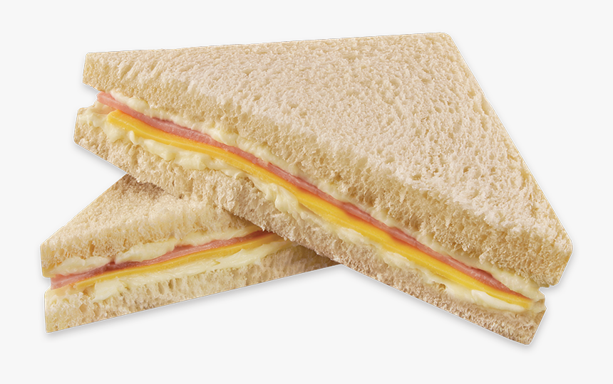

Sanduíchezin 🍞
Você vai precisar de:
- Duas fatias de pão de forma da marca plusvitta
- Uma fatia de presunto
- Uma fatia de queijo
- Um pote de requeijão tamanho normal
- Uma faca sem serra
- Um prato (à gosto)
- Uma mesa
Por favor, esteja com as mãos limpas!!
Modo de Preparo
- Pegue o prato com suas duas mãos
- Ponha o prato no centro da mesa
- Pegue uma fatia de pão de forma com suas duas mãos
- Ponha o pão no prato que você deixou na mesa
- Com suas mãos, tire a tampa do pote de requeijão
- Tire do requeijão
- Pegue a faca sem serra
- Pegue um pouco de requeijão com a faca
- Tire a faca do pote de requeijão
- Com a ajuda dessa faca, passe o requeijão por todo o pão
- Deixe a faca na mesa
- Pegue a fatia de presunto com suas mãos
- Coloque a fatia no pão, onde passou o requeijão
- Pegue a fatia de queijo com suas mãos
- Coloque a fatia de queijo no pão, por cima da fatia de presunto
- Pegue a outra fatia do pão de forma com suas mãos
- Coloque essa fatia de pão sobre o queijo